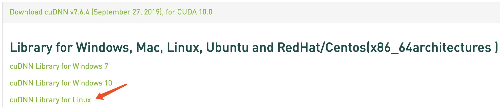
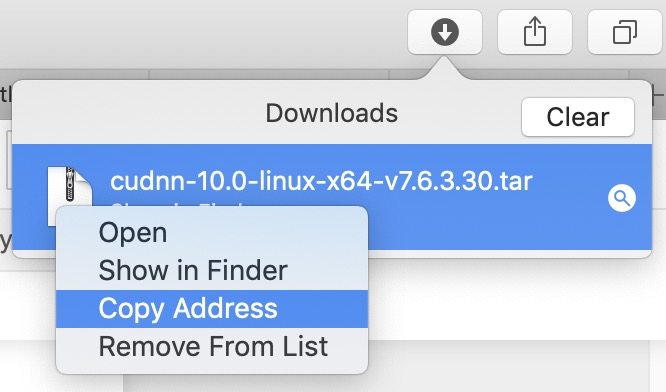
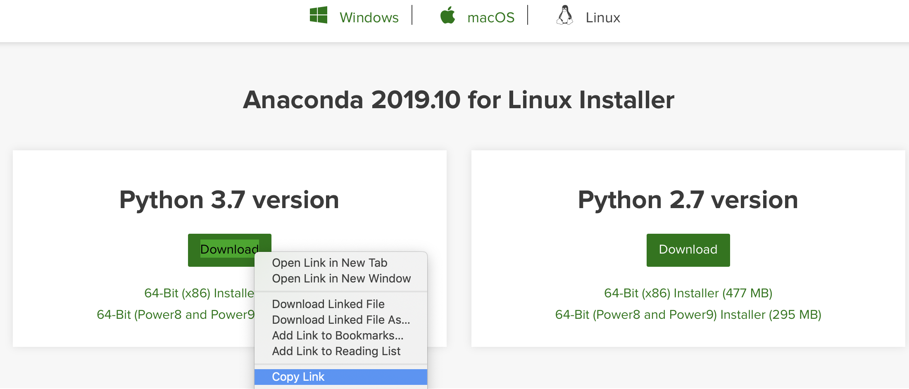
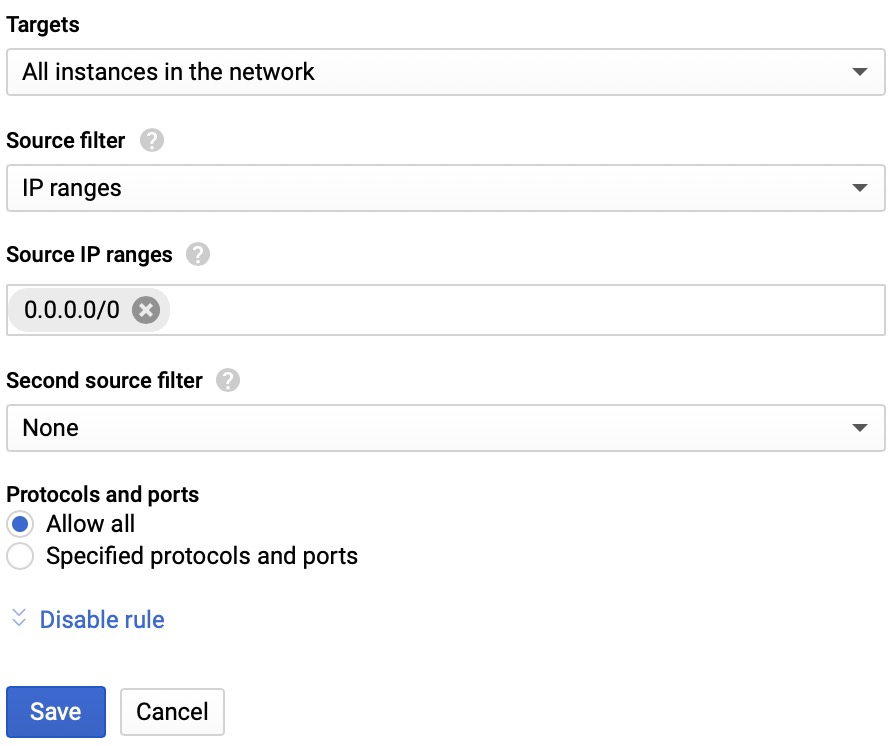
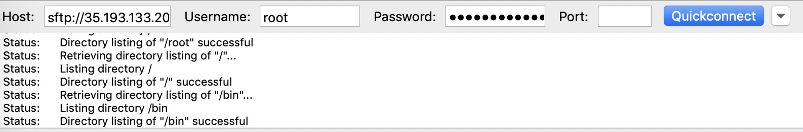

The series of passages to use the Google Cloud for deep learning has two parts: The first part is about creating a VM instance on the Google cloud and the second part is about installing some deep learning related configurations (jupyter notebook and GPUs). Now, Let’s move to the Part 2!
Configure the Deep Learning Enviroment
Step 1: Install GPU Drivers and CUDA
After you create an instance with one or more GPUs, your system requires device drivers so that your applications can access the device.
Install CUDA, which includes the NVIDIA driver. Following steps to install CUDA and the associated drivers for NVIDIA® GPUs.
- Run command line to create a script:
1
$ vim installNvidia.sh
Paste the following script to install CUDA:
1
2
3
4
5
6
7
8
9
10
11
12
13#!/bin/bash
echo "Checking for CUDA and installing."
# Check for CUDA and try to install.
if ! dpkg-query -W cuda-10-0; then
# The 16.04 installer works with 16.10.
curl -O http://developer.download.nvidia.com/compute/cuda/repos/ubuntu1604/x86_64/cuda-repo-ubuntu1604_10.0.130-1_amd64.deb
dpkg -i ./cuda-repo-ubuntu1604_10.0.130-1_amd64.deb
apt-key adv --fetch-keys http://developer.download.nvidia.com/compute/cuda/repos/ubuntu1604/x86_64/7fa2af80.pub
apt-get update
apt-get install cuda-10-0 -y
fi
# Enable persistence mode
nvidia-smi -pm 1Run command line to execute the script:
1
$ bash installNvidia.sh
Verify that the driver installed and initialized properly.
1
$ nvidia-smi
The output of the command looks similar to the following:
1
2
3
4
5
6
7
8
9+-----------------------------------------------------------------------------+
| NVIDIA-SMI 410.92 Driver Version: 410.92 |
|-------------------------------+----------------------+----------------------+
| GPU Name Persistence-M| Bus-Id Disp.A | Volatile Uncorr. ECC |
| Fan Temp Perf Pwr:Usage/Cap| Memory-Usage | GPU-Util Compute M. |
|===============================+======================+======================|
| 0 Tesla P100-PCIE... On | 00000000:00:04.0 Off | 0 |
| N/A 34C P0 26W / 250W | 0MiB / 16276MiB | 0% Default |
+-------------------------------+----------------------+----------------------+
Step 2: Install cuDNN
The NVIDIA CUDA® Deep Neural Network library (cuDNN) is a GPU-accelerated library of primitives for deep neural networks. cuDNN provides highly tuned implementations for standard routines such as forward and backward convolution, pooling, normalization, and activation layers.
If you want to use pytorch with an NVIDIA GPU…We ship with everything in-built (pytorch binaries include CUDA, CuDNN, NCCL, MKL, etc.)
When using pytorch, you just need to install the NVIDIA drivers and the binaries will come with the other libs. If you want to build from source, you would need to install CUDA, cuDNN etc.
The cuDNN can be installed as the following:
Check the version of your CUDA and download the corresponding version of cuDNN which requires a NVIDIA account.
1
2
3
4# Check the version of CUDA
$ cat /usr/local/cuda/version.txt
# Check the version of cuDNN
$ cat /usr/local/cuda/include/cudnn.h | grep CUDNN_MAJOR -A 2Download it to the local and copy it to the remote:

Or use
wgetto download it. It’s a bit more tricky, you have to start the downloading and copy the downloading link from the browser downloader.
Then decompress downloaded compressed file and get a folder
cuda:1
$ tar -zxvf file
Copy files to finish the installation
1
2$ sudo cp cuda/lib64/* /usr/local/cuda/lib64/
$ sudo cp cuda/include/cudnn.h /usr/local/cuda/include/
Step 3: Install Anaconda with Jupyter Notebook
Copy the bash (.sh file) installer link:

Use
wgetto download the bash installer:1
$ wget https://repo.continuum.io/archive/Anaconda3<release>.sh
Run the bash script to install Anaconda3:
1
$ bash Anaconda3-5.2.0-Linux-x86_64.sh
sourcethe.bashrcfile to add Anaconda to yourPATH. Now that Anaconda3 is added toPATH,sourcethe.bashrcfile to load the newPATHenvironment variable.1
$ source ~/.bashrcTo verify the installation is complete, open Python from the command line:
1
$ python
Step 4: Local Access to Jupyte Service
Set firewall rules in “VPC network“ → “Firewall rules“ → “Create firewall rules“. Set Source IP ranges as
0.0.0.0/0to allow all IPs to access. Set “Protocols and Ports“ to “tcp:port“, which the notebook server will listen on (e.g. 8888).
Create a Jupyter configuration file if it doesn’t exist:
1
$ jupyter notebook --generate-config
Add a few lines to your Jupyter configuration file:
1
$ vim .jupyter/jupyter_notebook_config.py
1
2
3
4
5
6
7c.NotebookApp.ip = '*'
# The port the notebook server will listen on.
c.NotebookApp.port = 8888
# Whether to open in a browser after starting.
c.NotebookApp.open_browser = False
# Whether to allow the user to run the notebook as root.
c.NotebookApp.allow_root = TrueRun the jupyter notebook:
1
2$ jupyter notebook
# Then paste returned URL to the browser: http://host(static-ip):8888/?token=...ccf7bb
Small Tips:
Make External IP Address as Static
By default, the external IP address is dynamic and we need to make it static to make our life easier.
- “VPC network“ →”External IP addresses“, and change the “Type“ from “Ephemeral“ to “Static“
Useful Script for Uninstallation
1 | $ sudo apt-get --purge remove cuda # uninstall cuda |
Create Conda Environment
With conda, you can create, export, list, remove, and update environments that have different versions of Python and/or packages installed in them.
1 | # Create and activate the environment |
Transfer Files Between the Local and Remote
Use scp command
From the local to the remote:
1
2
3
4$ scp local_file remote_username@remote_ip:remote_folder
$ scp local_file remote_username@remote_ip:remote_file
# Add -r parameter to move the entire folder
$ scp -r local_folder remote_username@remote_ip:remote_folderFrom the remote to the local: just reverse the path of file.
Use FTP application
- Use FileZilla® as an example, remember that you should use sftp://external-ip as the host.

Reference
Doc: Compute Engin Docmentation
Blog: Running Jupyter Notebook on Google Cloud Platform in 15 min
Blog: Installing Anaconda on Linux
Blog: Linux 教程